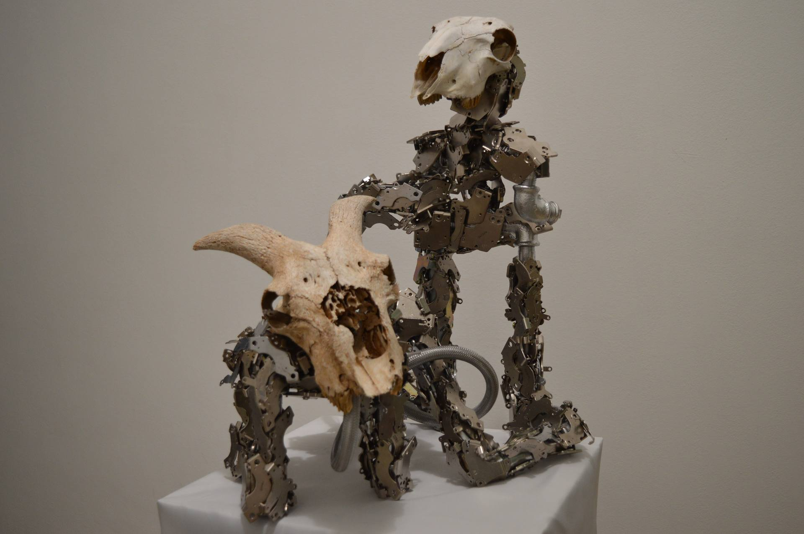
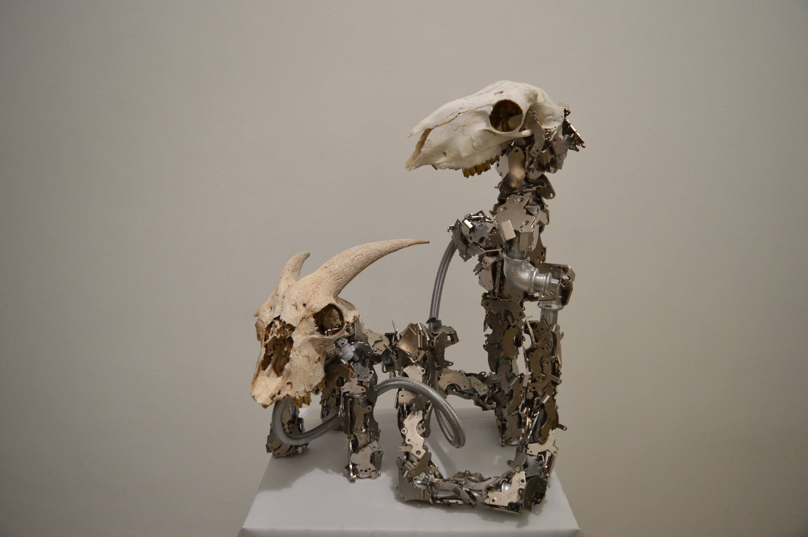
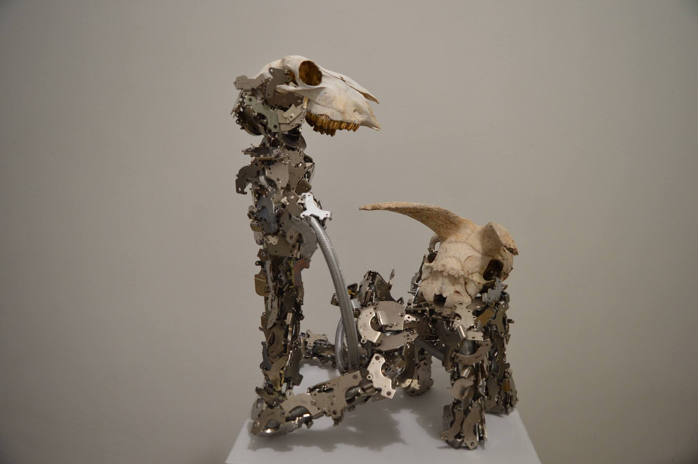

Εξάρτηση Dependency
Γλυπτό «Εξάρτηση» 2025
Καλλιτέχνης: Αλέξανδρος Μυλωνάς
Υλικά: γαλβανιζέ υδραυλικοί σωλήνες, μαγνήτες νεοδυμίου με τα περιβλήματά τους από 200 σκληρούς δίσκους HDD, φυσικά κρανία ζώων
Διαστάσεις: 45cm × 40cm × 60cm (Μ × Π × Υ)
Τα κρανία αποδίδουν τη φυσική προέλευση και ζωική υπόσταση, λειτουργώντας ως αναφορά στον χρόνο, στην οργανική μας βάση και στη θνητότητα.
Οι γαλβανιζέ σωλήνες παραπέμπουν στην αρχή της αλματώδους τεχνολογικής εξέλιξης του ανθρώπινου πολιτισμού.
Οι μαγνήτες από σκληρούς δίσκους ενσωματώνουν την έννοια της πληροφορίας, της ψηφιακής μνήμης και του σύγχρονου τεχνολογικού σώματος.
Πρόκειται για μια μορφή που ενσαρκώνει τον σύγχρονο άνθρωπο: υπερφορτωμένο με πληροφορία και τεχνική εξειδίκευση, αλλά αποξενωμένο από τη φυσική του αλήθεια.
Το γλυπτό είναι εμπνευσμένο από την παράνομη πρακτική εκτροφής πάπιας για την παραγωγή Φουά Γκρα, όπου το σώμα μετατρέπεται βίαια σε μηχανισμό παραγωγής υπεραξίας· έτσι και στο γλυπτό το οργανικό στοιχείο (τα κρανία) συνυπάρχει με τον ψυχρό βιομηχανικό σκελετό και τους μαγνήτες-φορείς δεδομένων. Το έργο σχολιάζει τη σύγχρονη κουλτούρα της εκμετάλλευσης — είτε αφορά το ζώο, είτε τον άνθρωπο, είτε την ίδια την πληροφορία που αποστραγγίζεται μέχρι εξάντλησης.
Ο άνθρωπος από την αρχή της ιστορίας γεννήθηκε για να εξουσιάζει και να εξουσιάζεται, να κυριαρχεί και να κυριαρχείται, να δημιουργεί και να καταστρέφει. Βρίσκεται σε έναν διαρκή αγώνα με όπλα του την τεχνολογική του ραγδαία εξέλιξη κόντρα στους νόμους της φύσης. Το γλυπτό «Εξάρτηση» αποτελεί τη δήλωση αυτής της άκοπης αλληλοεπίδρασης, μιας μάχης που δεν έχει νικητή. Εξάρτηση για κάθε τι γύρω του, κόντρα στη φυσική του μοναδικότητα και τα ένστικτα με τα οποία έχει οπλιστεί. Παγιδευμένος σε δίχτυα που ο ίδιος έχει επινοήσει.
Ηθική δήλωση: Για την παραγωγή του έργου δεν θανατώθηκε ούτε κακοποιήθηκε κανένα ζώο. Τα οργανικά υπολείμματα βρέθηκαν από τον ίδιο τον καλλιτέχνη στη φύση, σε κατάσταση πλήρους φυσικής αποσύνθεσης. Η προσέγγιση του έργου στηρίζεται στον σεβασμό προς τη ζωή και στη χρήση υλικών που ήδη υπήρχαν ως κατάλοιπα της ανθρώπινης και φυσικής δραστηριότητας.

